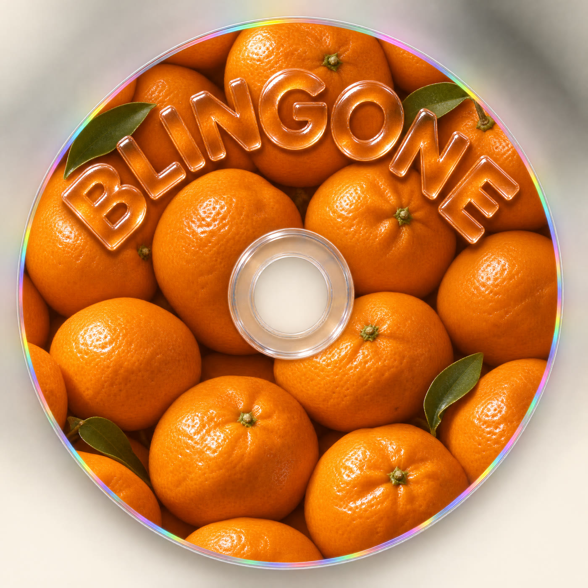
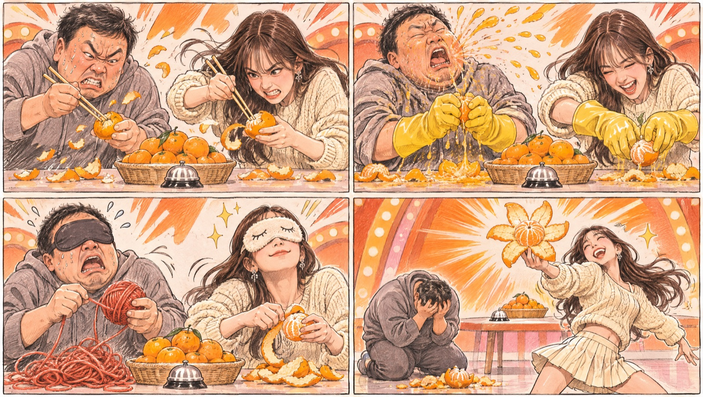
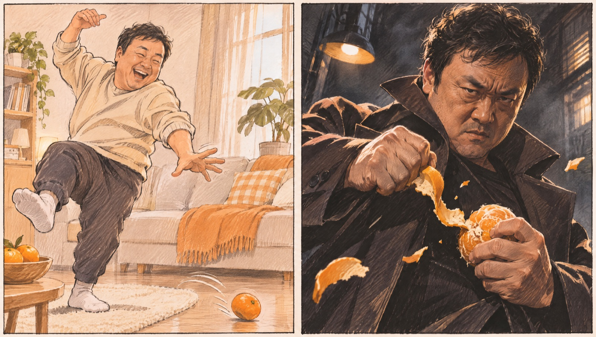
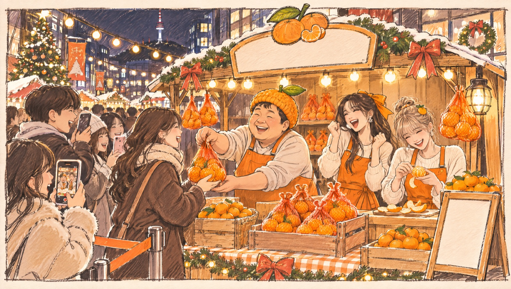
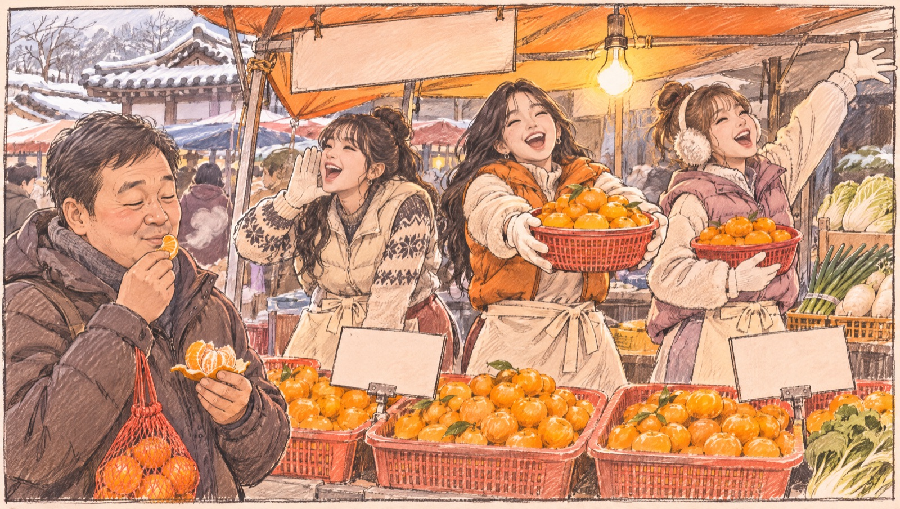

따라 추다 보면 귤 하나를 다 먹는 챌린지. 블링원 귤 시즌의 첫 곡 '까먹지 마'를 틱톡·릴스 챌린지로 퍼뜨리는 계획입니다.

노래는 방향을 보여 드리기 위한 가이드 데모입니다. 정식 음원은 작곡·작사가와 멤버 녹음으로 새로 만듭니다.
노래·재킷·톡쓱똑냠 안무는 세 플랜이 같이 씁니다. 그 위에서 누구를 움직여 퍼뜨리느냐가 다릅니다. 하나만 골라도 되고, A를 기본으로 하고 B나 C를 얹을 수도 있습니다. 아래 01~05장은 플랜 A의 자세한 내용입니다.
톡·쓱·똑·냠을 누구나 패러디하는 밈으로 만듭니다. 시딩 20명과 허미노 귤 까기 대결로 불을 붙입니다.
'나만 까먹지 마'를 연락이 뜸했던 사람에게 보내는 말로 바꿉니다. 귤과 노래를 선물처럼 주고받게 해서 크리스마스에서 설날까지 이어 갑니다.
노래를 제주 감귤의 겨울 캠페인 송으로 제안합니다. 감귤 홍보대사, 제주 팝업, 카페 시즌 메뉴처럼 기관·브랜드와 손잡고 퍼뜨립니다.
| 단계 | 플랜 A · 밈 챌린지 | 플랜 B · 귤 한 상자 | 플랜 C · 제주 캠페인 송 |
|---|---|---|---|
| 준비지금 ~ 12/11 | 곡·안무 확정, 시딩 20명 명단, 허미노 첫 미팅 | 귤 카드 웹 페이지, 제휴 농가·상자 포장 정하기 | 기관 제안서 발송, 카페·식음료 브랜드 접촉 |
| 첫 공개12/12 ~ 12/24 | 허미노 대결 1편, 12/23 성수 첫 공개와 껍질 목도리 알바 | 성수 이름표 귤망, 크리스마스 귤 카드 공개 | 카페 시즌 메뉴 시작, 성수 무대에서 제주 귤 소개 |
| 발매1월 | 사운드 등록, 시딩 영상, 패러디 듀엣 답장 | 발매와 함께 귤 카드 보내기 열기, 멤버 가족 편 | 홍보대사 위촉, 다국어 후렴 |
| 설 무렵2월 초 | 잘 된 패러디 모음, 농장 섭외 | 설 선물 귤 상자 판매, 받은 사람 인증 | 제주 공항·시장 팝업 |
| 그 뒤봄 ~ 다음 겨울 | 귤 농장 연재, 시즌 2 챌린지 | 어버이날·추석에 같은 틀 다시 | 다음 겨울 공식 캠페인 송 |
| 이것만 보면 됨 | 사운드 사용 영상 수 | 카드 발송 수, 상자 판매 수 | 제휴 건수, 팝업 방문자 |
세 플랜 모두 노래·재킷·안무를 같이 쓰므로 준비 단계는 겹칩니다. A를 기본으로 하고, 설날 매출이 필요하면 B를, 다음 겨울까지 길게 가려면 C를 얹는 조합을 권합니다.
손동작만 흉내 내는 챌린지가 아닙니다. 후렴 15초 동안 춤을 끝까지 따라 추면 귤 하나가 까지고, 한 조각이 입으로 들어갑니다. 가사 네 줄 끝마다 나오는 받는 소리 '톡·쓱·똑·냠'에 귤 동작을 하나씩 찍습니다. 영상이 끝나면 화면에 껍질 꽃과 노래진 손끝이 남습니다.
챌린지 시안 영상 · 소리 켜고 보세요 · 멤버 케시 얼굴로 만든 AI 동작 시안이며, 실제 원본 영상은 멤버가 직접 찍습니다.
| 마디 | 가사 | 1·2·3박 (춤) | 4박 (포인트) |
|---|---|---|---|
| 1 | 약속은 까먹고 (톡) | 검지로 관자놀이 톡톡, 고개 갸웃, 무릎 바운스 | 톡 · 귤 내밀고 꼭지 꾹 |
| 2 | 귤은 잘 까먹고 (쓱) | 귤을 양손으로 받쳐 원 그리기, 상체 웨이브 | 쓱 · 귤꽃 열기 |
| 3 | 내 이름 까먹고 (똑) | 자기 가슴 가리키며 어깨 들썩, 삐진 표정 | 똑 · 한 조각 떼서 머리 위로 |
| 4 | 또 하나 까먹고 (냠) | 조각 든 손 좌우로 흔들며 옆 스텝 | 냠 · 한 입, 볼빵빵 |
| 5 | 다 까먹어도 돼 | 양손 펴고 어깨 으쓱, 골반 좌우 | |
| 6 | 나만 까먹지 마 | 카메라 콕 → 자기 가슴 → 검지 '안 돼 안 돼' | |
| 7 | Don't forget, don't forget | 노래진 손끝을 얼굴 옆에서 반짝반짝 | |
| 8 | 까먹지 마 | 귤꽃을 볼 옆에 대고 윙크 | 손가락 하트 |
틱톡에서 손동작만 따라 하는 챌린지 영상이 3천만 회를 넘겼습니다. 전신 춤이 아니라 이불 속에 앉아서도 따라 합니다.
귤 껍질 한 번에 까기 실패 영상이 3천만 회입니다. 박자를 놓치거나 껍질이 안 열리는 장면이 그대로 2차 영상이 됩니다.
아이돌이 귤 까는 장면만 올린 영상이 490만 회였습니다. 블링원은 여기에 노래와 안무를 붙여 '우리 것'으로 만듭니다.
겨울이면 집집마다 귤이 있습니다. 따라 하는 데 돈과 시간이 들지 않고, 매년 겨울 다시 돌릴 수 있습니다.
한 번에 열리는 귤꽃이 댓글을 부르고, '귤꽃 까는 법' 영상이 따로 나옵니다.
일본에도 '코타츠에 귤'이라는 겨울 장면이 있습니다. 일본어판(みかん)으로 그대로 이어집니다.
조회수는 2026년 11월 틱톡·인스타그램 해시태그 조사 기준입니다.
이 챌린지의 진짜 무기는 귤이 아니라 소리입니다. '톡 쓱 똑 냠'은 무엇이든 누르고, 벗기고, 떼고, 먹는 장면에 붙일 수 있습니다. 처음 20명 정도가 각자 다른 버전으로 올려 주면, 그다음부터는 사람들이 재미있어서 개그 소재로 알아서 가져다 씁니다. 정석 버전은 블링원이, 변형 버전은 대중이 만드는 구조입니다.
| 버전 | 톡 | 쓱 | 똑 | 냠 |
|---|---|---|---|---|
| 사과 | 꼭지 톡 | 칼로 껍질 쓱 | 한 조각 똑 | 아삭 냠 |
| 삶은 달걀 | 이마에 톡 | 껍질 쓱 | 반으로 똑 | 냠 |
| 컵라면 | 뚜껑 톡 | 비닐 쓱 | 스프 똑 | 3분 기다리다 냠 |
| 느와르 액션 | 무서운 형사 표정으로 귤을 짓누르듯 톡 | 껍질을 한 번에 뜯어내듯 쓱 | 조각을 부러뜨리듯 똑 | 무표정으로 냠. 잔인해 보이는데 귤이라 웃김 |
| 자연 다큐 | 슬로모션 + 낮은 내레이션 '겨울, 한 인간이 귤을 만났다'. 동작은 그대로, 분위기만 진지하게 | |||
| 직장인 | 출근 카드 톡 | 넥타이 쓱 | 노트북 똑 덮고 | 퇴근 치킨 냠 |
| 가족 | 아이가 시키는 대로 아빠·할머니가 어설프게 따라 하다 귤을 떨어뜨리는 영상 | |||
| 실패 모음 | 껍질이 안 열리고, 박자를 놓치고, 귤이 굴러가는 장면만 모은 영상 | |||
공식 사운드 하나를 모두가 같이 쓰게 하는 것이 핵심입니다. 어떤 버전이 올라와도 그 사운드 페이지에 쌓이고, 결국 블링원 노래가 퍼집니다.
섭외는 WKC가 가진 크리에이터 네트워크로 진행합니다. 광고비 없이 무료로 진행할 수 있습니다.
| 그룹 | 몇 명 | 맡길 버전 |
|---|---|---|
| 댄스 커버 크리에이터 | 4 | 정석 Lv.2, 귤꽃이 예쁘게 열리는 버전 |
| 코미디·스케치 크리에이터 | 4 | 느와르 액션, 자연 다큐, 직장인 같은 패러디 |
| 먹방·요리 크리에이터 | 4 | 사과, 달걀, 컵라면 같은 다른 음식 버전 |
| 해외 K-팝 팬 계정 | 4 | 영어·중국어·일본어 자막 버전, 'gyul'이라는 단어 소개 |
| 일상·가족 브이로그 | 4 | 가족 버전, 실패 모음 |
허미노MINO는 음식 하나를 1%부터 100%까지 먹어 가는 '1~100%' 영상이 가장 잘 됩니다(인스타 릴스 10만~100만 회). 젊은 그룹·연예인과의 협업과 댄스 커버도 거리낌 없이 해 왔고, 인스타 공동게시를 했을 때 조회가 가장 크게 올랐습니다. 블링원 팬층과 다른 30~50대 시청자를 데려올 수 있는 상대입니다.
아래 그림은 장면 구성을 보여 드리기 위한 스케치입니다. 인물은 실제 얼굴이 아닙니다.

허미노와 멤버가 단계마다 귤 까기 대결을 합니다. 단계가 올라갈수록 황당해집니다. 맨손 → 젓가락 → 고무장갑 → 눈 가리고 → 마지막 100%는 노래에 맞춰 15초 안에 톡·쓱·똑·냠. 마지막 판은 결국 챌린지 실력이라 멤버가 유리하고, 아재가 처절하게 지는 그림이 웃음 포인트입니다. 첫 3초 미끼: "아이돌한테 귤 까기로 지면 생기는 일". 시작 전에 벌칙을 걸어 둡니다. 진 사람은 12/23 성수 귤가게에서 귤껍질 목도리를 두르고 하루 알바.

발매 주에 허미노가 챌린지를 따라 합니다. 서툰 동작 버전 하나, 무서운 표정의 느와르 버전 하나. 시딩 20명보다 먼저 올라가 '패러디해도 된다'는 신호가 됩니다.

진 아재가 1편에서 깐 귤껍질을 말려 엮은 목도리를 두르고 블링원 귤가게에서 하루 알바를 합니다. 손님이 귤 한 망을 살 때마다 멤버가 목도리에 껍질을 하나씩 더 엮어서, 마감 때쯤엔 목도리가 바닥에 끌립니다. 손님이 껍질 목도리 아재와 사진을 찍는 장면이 그대로 콘텐츠가 되고, 1편을 본 사람이 성수로 찾아오는 이유가 됩니다. 1편 공개 때 "12/23 성수에서 벌칙 수행"을 예고해 둡니다.

블링원 롱폼 '귤 파는 소녀들'(시장 야채가게 일일 판매) 편에 귤 한 망 사러 온 단골 손님으로 나옵니다. 말없이 귤 하나를 까서 먹고 '오늘도 좋았다'.
그가 어린 시절 겨울에 귤 한 상자를 나눠 먹던 이야기를 들려주고, 멤버들은 고향의 겨울 이야기를 합니다. 크리스마스 무렵 공개용, 따뜻한 편.
올리는 법: 모든 편을 인스타 공동게시(블링원 × 허미노)로 올립니다. 뺄 것: 술, 많이 먹기 대결, 멤버의 먹방. 숫자는 2026-11-22 공개 채널 조회 기준입니다.
노래가 겨울에 끝나지 않게, 제주 성산의 귤밭 한 곳과 손잡고 '블링원 귤 농장'을 만듭니다. 귤은 5월에 꽃이 피고, 여름에 청귤이 되고, 겨울에 익습니다. 그 한 해가 그대로 연재가 됩니다.
| 때 | 농장에서 | 콘텐츠 |
|---|---|---|
| 1~2월 | 농가 섭외, '블링원 귤 농장' 간판, 멤버 이름표 단 나무 다섯 그루 | 뮤직비디오 촬영지, 귤밭 챌린지 영상 |
| 5월 | 진짜 귤꽃이 핌 | '귤꽃 까는 법'의 진짜 귤꽃 편, 멤버 나무 근황 |
| 여름 | 청귤 | 청귤청 만들기, 롱폼 '귤 농사 짓는 아이돌' |
| 다음 겨울 | 수확 | 수확 팬미팅 + 미니 공연, '까먹지 마' 시즌 2 챌린지 |
| 할 일 | 담당 | 언제까지 |
|---|---|---|
| 다음 곡을 '까먹지 마'로 확정 | WKC | 11월 말 |
| 작곡·작사 의뢰(06의 요청 전달) | WKC · 브룩스 | 12월 첫 주 |
| 허미노 측 첫 미팅 | WKC · 브룩스 | 12월 첫 주 |
| 후렴 녹음, 안무 다듬기·멤버 시범 | WKC · 안무가 · 멤버 | 12/11(금) |
| 재킷·사운드 이름·게시 문구 확정 | 브룩스 | 12/11(금) |
| 시딩 20명 섭외(WKC 네트워크, 무료)·브리프·귤 키트 | WKC · 브룩스 | 12/18(금) |
| 성수 공연 첫 공개, 허미노 껍질 목도리 알바·현장 촬영 | WKC · 브룩스 | 12/23(수) |
| 귤 키트 발송, 시딩 영상 공개 | 브룩스 | 발매 D-7 ~ D+7 |
| 음원·뮤직비디오 발매, 사운드 등록 | WKC | 1월 |
| 패러디 듀엣 답장, 숫자 점검(사운드 사용 수) | 멤버 · 브룩스 | 발매 후 2주 |
| 제주 귤 농장 섭외 | WKC | 2월 |